統計モデリング入門 2024 岩手連大
https://heavywatal.github.io/slides/iwate2024stats/
有名な確率分布対応関係ふりかえり

- 離散一様分布
- コインの表裏、サイコロの出目1–6
- 負の二項分布 (幾何分布 if n = 1)
- 成功率pの試行がn回成功するまでの失敗回数
- 二項分布
- 成功率p、試行回数nのうちの成功回数
- ポアソン分布
- 単位時間あたり平均$\lambda$回起こる事象の発生回数
- ガンマ分布 (指数分布 if k = 1)
- ポアソン過程でk回起こるまでの待ち時間
- 正規分布
- 確率変数の和、平均値。使い勝手が良く、よく登場する。
データに分布をあてはめたい
ある植物を50個体調べて、それぞれの種子数Xを数えた。
個体Aは種2個、個体Bは種4個、、、サンプルサイズ n = 50 のデータ。
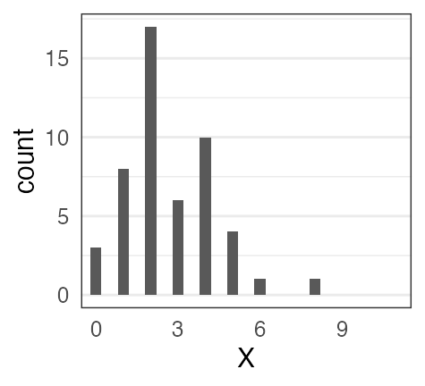
カウントデータだし形もポアソン分布っぽい。
分布のパラメータ $\lambda$ はどれくらいがいいだろう？
データに分布をあてはめたい
ある植物を50個体調べて、それぞれの種子数Xを数えた。
個体Aは種2個、個体Bは種4個、、、サンプルサイズ n = 50 のデータ。
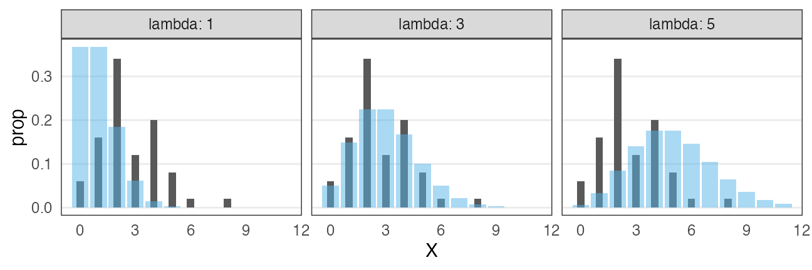
カウントデータだし形もポアソン分布っぽい。
分布のパラメータ $\lambda$ はどれくらいがいいだろう？
黒が観察データ。青がポアソン分布。 よく重なるのは $\lambda \approx 3$ くらいか。
尤度 (likelihood)
尤もらしさ。 モデルのあてはまりの良さの尺度のひとつ。
あるモデル$M$の下でそのデータ$D$が観察される確率。
定義通り素直に書くと
$\Pr(D \mid M)$
データ$D$を固定し、モデル$M$の関数とみなしたものが尤度関数:
$L(M \mid D)$
モデルの構造も固定してパラメータ$\theta$だけ動かす場合はこう書く:
$L(\theta \mid D)$ とか $L(\theta)$ とか
尤度を手計算できる例
コインを5枚投げた結果 $D$: 表 4, 裏 1
表が出る確率 $p = 0.5$ と仮定:
表が出る確率 $p = 0.8$ と仮定:
$L(0.8 \mid D) > L(0.5 \mid D)$
$p = 0.8$ のほうがより尤もらしい。
種子数ポアソン分布の例でも尤度を計算してみる
$n = 50$個体ぶん、且つ、且つ、且つ、と確率を掛けていく:
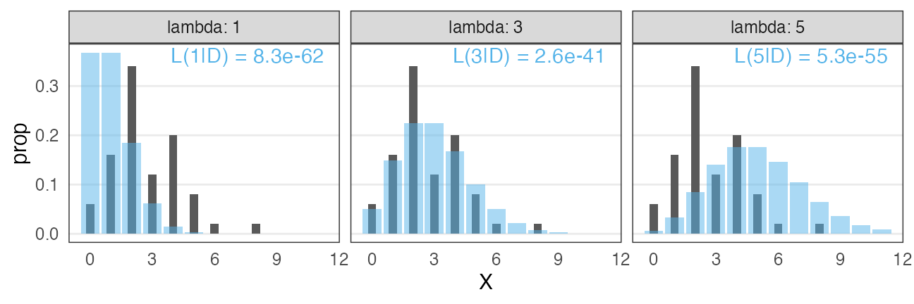
この中では $\lambda = 3$ がいいけど、より尤もらしい値を求めたい。
最尤推定 Maximum Likelihood Estimation
扱いやすい 対数尤度 (log likelihood) にしてから計算する。
一階微分が0になる $\lambda$ を求めると…標本平均と一致。
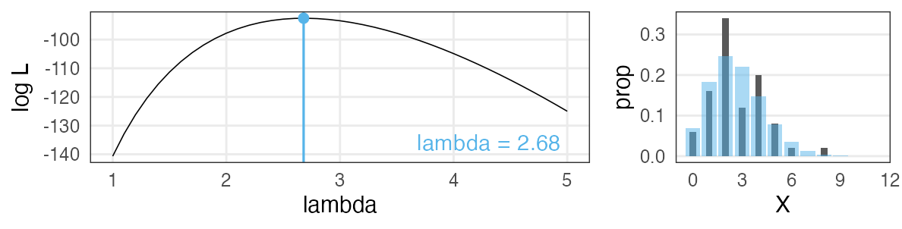
最尤推定を使っても“真のλ”は得られない
今回のデータは真の生成ルール“$X \sim \text{Poisson}(\lambda = 3.0)$”で作った。
「50個体サンプル→最尤推定」を1,000回繰り返してみると:
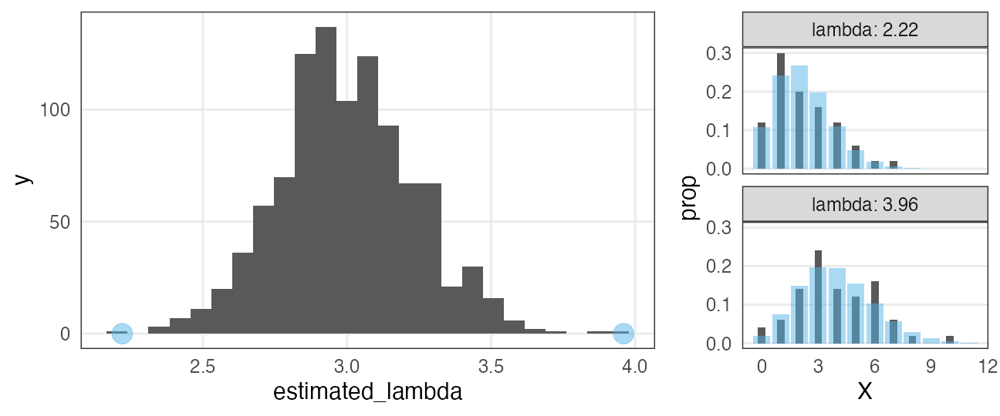
サンプルの取れ方によってはかなりズレた推定をしてしまう。
(標本データへのあてはまりはかなり良く見えるのに！)
サンプルサイズを増やすほどマシにはなる
“$X \sim \text{Poisson}(\lambda = 3.0)$”からnサンプル→最尤推定を1,000回繰り返す:
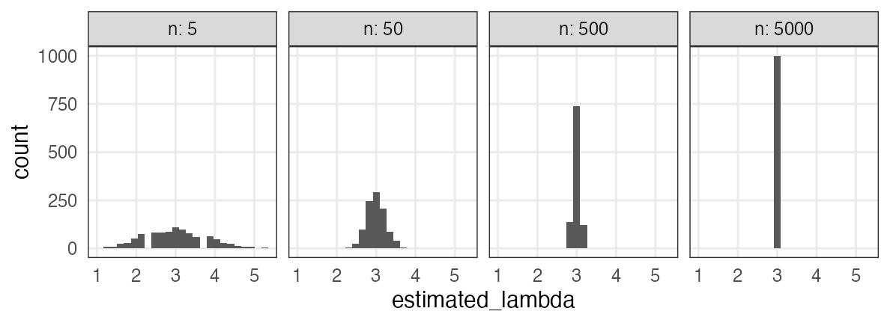
Q. じゃあどれくらいのサンプル数nを確保すればいいのか？
A. 推定したい統計量とか、許容できる誤差とかによる。
すべてのモデルは間違っている
確率分布がいい感じに最尤推定できたとしても、
それはあくまでモデル。仮定。近似。
All models are wrong, but some are useful. — George E. P. Box
統計モデリングの道具 — まとめ
- 何はともあれ作図して俯瞰
- 確率変数 $X$
- 確率分布 $X \sim f(\theta)$
- 少ないパラメータ $\theta$ でばらつきの様子を表現
- この現象はこの分布を作りがち(〜に従う) という知見がある
- 尤度
- あるモデルでこのデータになる確率 $\Pr(D \mid M)$
- データ固定でモデル探索 → 尤度関数 $L(M \mid D),~L(\theta \mid D)$
- 対数を取ったほうが扱いやすい → 対数尤度 $\log L(M \mid D)$
- これを最大化するようなパラメータ $\hat \theta$ 探し ＝ 最尤法
🔰 尤度の練習問題
サイコロを10回振ったら6の目が3回出た。
- 6の目の出る確率が1/6だとした場合の尤度は?
- 6の目の出る確率が0.2だとした場合の尤度は?
- 横軸を6の目の出る確率、縦軸を対数尤度とするグラフを描こう。
- このサイコロで6の目が出る確率を最尤推定しよう。
数学で解ければ優。Rで見つければ良。目分量・勘で可。
- ヒント
- 確率pで当たるクジをn回引いてk回当たる確率、と同じ計算を使う。
- 数学の $\binom 5 2 = {}_5 \mathrm{C} _2 = 10$ はRでは
choose(5, 2)。
ちょっとずつ線形モデルを発展させていく
線形モデル LM (単純な直線あてはめ)
↓ いろんな確率分布を扱いたい
一般化線形モデル GLM
↓ 個体差などの変量効果を扱いたい
一般化線形混合モデル GLMM
↓ もっと自由なモデリングを！
階層ベイズモデル HBM
データ解析のための統計モデリング入門 久保拓弥 2012 より改変
確率分布に長い時間を割いたけど、元はと言えば回帰したいのでした。
ここまでに見た統計モデル
確率変数$X$はパラメータ$\theta$の確率分布$f$に“従う”: $X \sim f(\theta) $
e.g., ある植物が作る種の数$X$は平均値$\lambda$のポアソン分布に従う:

これを一般化線形モデル(GLM)として見ることもできる→
一般化線形モデル(GLM)として記述してみる
個体$i$の種子数$y_i$は平均値$\lambda_i$のポアソン分布に従う。
平均値$\lambda_i$は他のデータによらず$\beta_0$で一定。

種子数をY軸にして、式を2つに分けただけ…?
説明変数を含むモデルを見ればご利益が分かるかも。
説明変数が1つある一般化線形モデル
個体$i$の種子数$y_i$は平均値$\lambda_i$のポアソン分布に従う。
平均値の対数$\log(\textcolor{#3366ff}{\lambda_i})$はその個体の大きさ$x_i$に比例する。

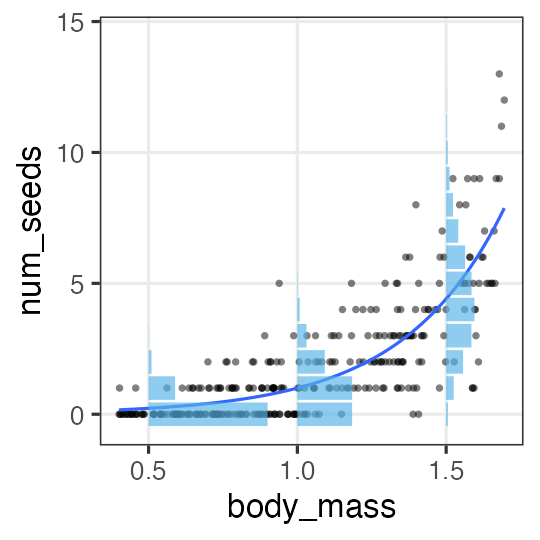
この場合は単回帰。説明変数が複数あると重回帰。
複数の説明変数を同時に扱う重回帰
\[\begin{split} y_i &\sim \text{Poisson}(\lambda_i) \\ \log(\lambda_i) &= \beta_0 + \beta_1 x_{1i} + \beta_2 x_{2i} + \ldots \end{split}\]
気温も湿度も高いほどビールが売れる架空データ:

ほかの確率分布とリンク関数を使う例を見てみよう。
ロジスティック回帰
- 確率分布: 二項分布
- リンク関数: $\operatorname{logit}(p) = \log \frac {p} {1 - p}$
何かの成否に対する何かの因子の影響、とか
客10人中$y_i$人がビールを注文。
その日$i$の気温$x_i$によって割合が変化。
\[\begin{split} y_i &\sim \text{Binomial}(n,~p_i) \\ \operatorname{logit}(p_i) &= \beta_0 + \beta_1 x_i \\ p_i &= \frac 1 {1 + e^{-(\beta_0 + \beta_1 x_i)}} \end{split}\]
ロジスティック関数↑

ロジスティック回帰 (狭義)
- 確率分布: ベルヌーイ分布 ($n = 1$ の二項分布)
- リンク関数: $\operatorname{logit}(p) = \log \frac {p} {1 - p}$
何かの成否に対する何かの因子の影響、とか
風が吹けば桶屋が儲かる。
\[\begin{split} y_i &\sim \text{Bernoulli}(p_i) \\ &= \text{Binomial}(1,~p_i) \\ \operatorname{logit}(p_i) &= \beta_0 + \beta_1 x_i \\ p_i &= \frac 1 {1 + e^{-(\beta_0 + \beta_1 x_i)}} \end{split}\]
ロジスティック関数↑
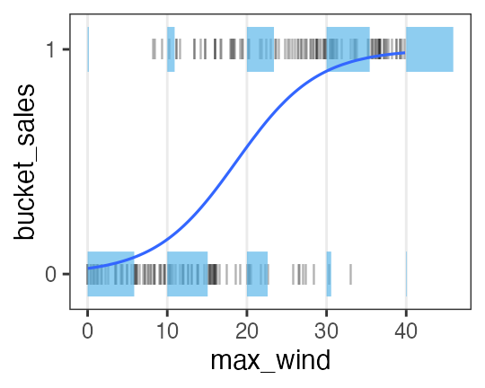
一般線形モデル (“化”無し) はGLMの一種
- 確率分布: 正規分布
- リンク関数: 恒等関数(なにもせずそのまま)
\[\begin{split} y_i &\sim \mathcal{N}(\mu_i,~\sigma^2) \\ \operatorname{identity}(\mu_i) &= \beta_0 + \beta_1 x_i \end{split}\]
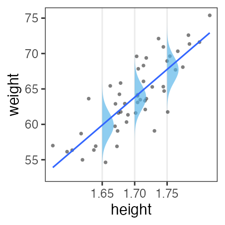
最小二乗法の直線あてはめと結果的に同じになる。
単回帰・重回帰と言ったとき一般線形モデルを前提とする人もいる。
分散分析 (Analysis of variance, ANOVA) as GLM
質的な説明変数を持つ正規分布・恒等リンクのGLM、と解釈可能。
指示変数 (0 or 1) に変換してから重回帰する。
| 天気 | → | $x_1$ ☀️ 晴れ | $x_2$ ☔️ 雨 |
|---|---|---|---|
| ☁️ くもり | 0 | 0 | |
| ☀️ 晴れ | 1 | 0 | |
| ☔️ 雨 | 0 | 1 |
\[\begin{split} y_i &\sim \mathcal{N}(\mu_i,\sigma^2) \\ \mu_i &= \beta_0 + \beta_1 x_{1i} + \beta_2 x_{2i} \end{split}\]
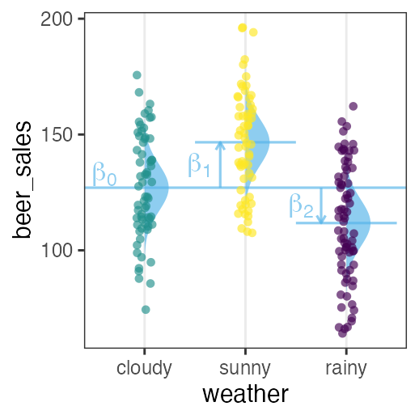
くもり☁️ $\beta_0$ を基準に、晴れの効果☀️ $\beta_1$ と雨の効果☔️ $\beta_2$ が求まる。
GLMなら確率分布・リンク関数を変えてもっと柔軟にモデリングできる。
共分散分析 (Analysis of covariance, ANCOVA) as GLM
質的変数と量的変数を両方含むGLM、と解釈可能。
正規分布・等分散・恒等リンクなどが仮定される。
| 天気 | → | $x_1$ ☀️ 晴れ | $x_2$ ☔️ 雨 |
|---|---|---|---|
| ☁️ くもり | 0 | 0 | |
| ☀️ 晴れ | 1 | 0 | |
| ☔️ 雨 | 0 | 1 |
\[\begin{split} y_i &\sim \mathcal{N}(\mu_i,\sigma^2) \\ \mu_i &= \beta_0 + \beta_1 x_{1i} + \beta_2 x_{2i} + \beta_3 x_{3i} \end{split}\]

GLMなら確率分布・リンク関数を変えてもっと柔軟にモデリングできる。
交互作用
ある説明変数の効果が、別の説明変数によって異なる。
e.g., ビール売上の温度依存性が天気によって異なる。
| 天気 | $x_1$ |
|---|---|
| ☀️ 晴れ | 1 |
| ☔️ 雨 | 0 |
\[\begin{split} y_i &\sim \mathcal{N}(\mu_i,\sigma^2) \\ \mu_i &= \beta_0 + \beta_1 x_{1i} + \beta_2 x_{2i} + \beta_{1,2} x_{1i} x_{2i} \end{split}\]
雨の日は $x_{1i} = 0$ のため $\beta_0,~\beta_2$ の項だけ。
晴れの日はそれに加えて $\beta_1,~\beta_{1,2}$ の項も。
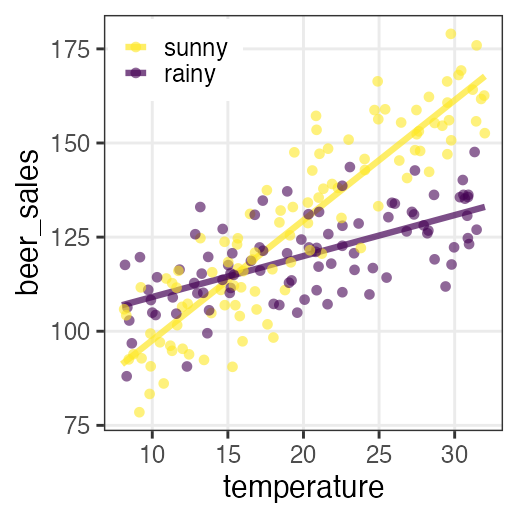
解釈が一気に難しくなるのでむやみに使わない。
一般化線形モデル(GLM)ふりかえり
確率分布・リンク関数を変えて柔軟にモデリングできる。
特定の組み合わせには名前がある。
| 名前 | 確率分布 | リンク関数 | 説明変数 |
|---|---|---|---|
| ポアソン回帰 | ポアソン分布 | log | |
| ロジスティック回帰 | 二項分布 | logit | |
| 一般線形回帰 | 正規分布 | 恒等 | |
| 分散分析 | 正規分布 | 恒等 | 質的変数 |
| 共分散分析 | 正規分布 | 恒等 | 質的変数+量的変数 |
確率分布については前章を参照。
リンク関数をもう少しだけ掘り下げたい。
リンク関数
統計モデリングにおいて「まっすぐ以外も表現できる」意味
- $\operatorname{identity}(\mu_i)$
- $\mu_i = \beta_0 + \beta_1 x_{1i} + \beta_2 x_{2i} + \ldots$
- 説明変数の効果が足し算的に働く。
- $\log(\lambda_i)$
- $\lambda_i = e^{\beta_0 + \beta_1 x_{1i} + \beta_2 x_{2i} + \ldots} = e^{\beta_0} \times e^{\beta_1 x_{1i}} \times e^{\beta_2 x_{2i}} \times \ldots$
- 説明変数の効果が掛け算的に働く。
e.g., $\Delta x_1$ 増えると $e^{\beta_1 \Delta x_{1}}$ 倍になる - $\operatorname{logit}(p_i)$
- $p_i = \frac 1 {1 + e^{-(\beta_0 + \beta_1 x_i + \ldots)}} $ (ロジスティック関数)
- 説明変数の効果が頭打ちになる。
e.g., $\lim_{x \to -\infty} p = 0;~\lim_{x \to \infty} p = 1$
ほかに probit, inverse, sqrt, etc.
RにおけるGLMのやりかた
直線回帰のときの lm とほぼ同じ。
formula = weight ~ height
fit = glm(formula, data = df_weight)
coef(fit)
(Intercept) height
-69.85222 78.63444
デフォルトは正規分布・恒等リンクで lm と同じ結果。
family= オプションで確率分布とリンク関数を明示的に指定:
glm(formula, family = gaussian(link = identity), data = mydata)
glm(formula, family = poisson(link = log), data = mydata)
glm(formula, family = binomial(link = logit), data = mydata)
See ?family for more details.
🔰 とにかくGLMを使ってみる練習
とりあえず当てはめと作図だけ。
結果の解釈やモデルの評価はこの後。
n = 50
df_weight = tibble::tibble(
height = rnorm(n, 1.70, 0.05),
bmi = rnorm(n, 22, 1),
weight = bmi * (height**2)
) |>
print()
height bmi weight
1 1.718019 21.55500 63.62151
2 1.782862 22.83775 72.59199
3 1.617464 22.43569 58.69604
4 1.678291 23.37245 65.83231
--
47 1.762930 21.78337 67.70106
48 1.744133 21.47257 65.31960
49 1.730495 19.72866 59.07966
50 1.676496 22.85824 64.24627
🔰 とにかくGLMを使ってみる練習 解答例
fit_wh = glm(weight ~ height, family = gaussian(link = identity), data = df_weight)
coef(fit_wh)
(Intercept) height
-69.85222 78.63444
df_fit_wh = modelr::add_predictions(df_weight, fit_wh, type = "response")
ggplot(df_fit_wh) +
aes(height, weight) +
geom_point() +
geom_line(aes(y = pred), linewidth = 1, color = "#3366ff")
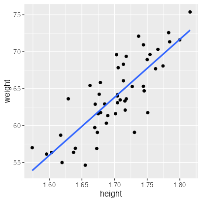
🔰 ポアソン回帰
n = 300L
a = 3
b = -3
df_seeds = tibble::tibble(
body_mass = runif(n, 0.4, 1.7),
num_seeds = rpois(n, exp(a * body_mass + b))
) |>
print()
body_mass num_seeds
1 0.9185923 1
2 0.5154446 0
3 1.3362802 4
4 1.6858125 11
--
297 1.3407210 3
298 1.3357421 1
299 0.8928759 0
300 0.4583795 0
そのほかの練習問題は末尾に。
データはひとつ、モデルはたくさん
どう選ぶ？
- メカニズム的に納得できるものを選ぶ
- ポアソン過程のカウントならポアソン分布、間隔ならガンマ分布
- n回中k回のように割合的なカウントなら二項分布
- データを可視化してみて、それっぽい形・性質のものを選ぶ
- 左右対称のひと山ならとりあえず正規分布
- 負の値を取らないならガンマ分布
- 直線的か、指数関数的か、頭打ちか、などなど
客観的な指標もほしい。
モデルの尤もらしさといえば…
尤度 (likelihood)
あるモデル$M$の下でそのデータ$D$が観察される確率:
$\Pr(D \mid M)$
データ$D$を固定し、モデル$M$の関数とみなしたものが尤度関数:
$L(M \mid D)$
モデルの構造も固定してパラメータ$\theta$だけ動かす場合はこう書く:
$L(\theta \mid D)$ or $L(\theta)$
対数尤度 $\log L$ の形にしたほうがいろいろ便利。
各モデルで最適なパラメータを探して、比較:
$\log L^* (M_1) \text{ vs. } \log L^* (M_2) \text{ vs. } \log L^* (M_3) \ldots$
broom::glance(fit)
null.deviance df.null logLik AIC BIC deviance df.residual nobs
1 1305.043 49 -124.9298 255.8597 261.5957 433.2606 48 50
たしかに尤度はあてはまりの良さを表してそう
この場合は直線回帰よりもポアソン回帰が良さそう:
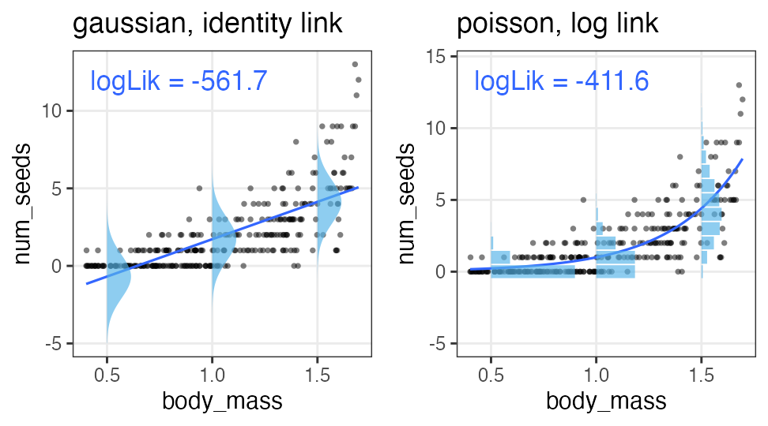
この調子で、より尤度の高いモデルを探していけばいいだろうか？
あてはまりが良ければいいってもんでもない
- 過剰適合 / 過学習 / overfitting
- パラメータを増やせば現データへの適合度・尤度を高くできるが、
予測・理解の役には立たなくなる。
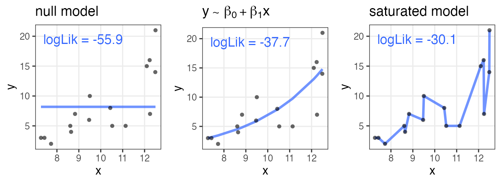
帰無モデル: 説明変数なし。切片のみ。
飽和モデル: データ点の数 ≤ パラメータの数。“データ読み上げ”的モデル
無駄な説明変数を加えても尤度は上がる
ある植物が作る種の数 $y$ は個体のサイズ $x$ に応じて増える。
観察時に着てた服の色 $x_2$ を追加すると尤度が上がる……?

AIC: 赤池情報量基準
\[\begin{split} \text{AIC} = -2 (\log L^* - k) = -2 \log L^* + 2k \end{split}\]
- AICが小さいほど予測精度の良いモデル。
- 尤度は上げたい。
- パラメータ数 $k$ が増えるとペナルティ。
- どのデータに対する当てはまりを目指すかという観点
- 「手元のデータ」に対する対数尤度は $\log L^*$
- 「真のメカニズムから出てくる未来のデータ」に対する
平均対数尤度の推定量は $(\log L^* - k)$
(Kullback–Leibler情報量を使って導出するらしい)
- 「手元のデータ」に対する対数尤度は $\log L^*$
broom::glance(fit)
null.deviance df.null logLik AIC BIC deviance df.residual nobs
1 1305.043 49 -124.9298 255.8597 261.5957 433.2606 48 50
無駄な説明変数の追加でAIC増加
ある植物が作る種の数 $y$ は個体のサイズ $x$ に応じて増える。
観察時に着てた服の色 $x_2$ を追加したモデルはAICが増加。
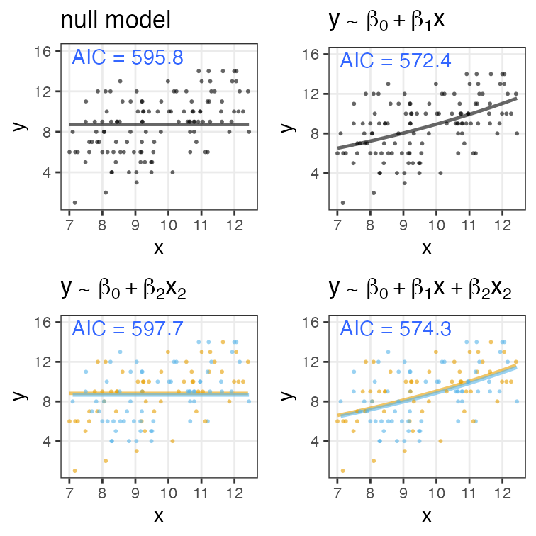
ほかの情報量基準
モデル選択の心構え
「正しい」ものを選べるわけではない。
予測・理解に useful なものを何らかの基準で選ぶだけ。
All models are wrong, but some are useful. — George E. P. Box
現実的な注意点・悩みどころ
- 多重共線性(multicollinearity):
- 説明変数同士が強い相関関係にある
- 変数変換:
- 気安くやるべきじゃないけど、対数変換などしばしば有用
- 割り算した値は危険
- 交互作用を入れると解釈が難しくなる。
一般化線形モデル座学まとめ
- 何はともあれ散布図を描く
- 適切な確率分布・リンク関数・説明変数を考える
- パラメータを最尤推定する
- 尤度は「手元のデータへのあてはまり」
- モデルを比較するときは情報量基準を参考にする
ちょっとずつ線形モデルを発展させていく

久保先生の"緑本"こと
「データ解析のための統計モデリング入門」
をベースに回帰分析の概要を紹介。
線形モデル LM (単純な直線あてはめ)
↓ いろんな確率分布を扱いたい
一般化線形モデル GLM
↓ 個体差などの変量効果を扱いたい
一般化線形混合モデル GLMM
↓ もっと自由なモデリングを！
階層ベイズモデル HBM
n個のうちy個生存。二項分布に従……わない！
植物100個体から8個ずつ種子を取って植えたら全体で半分ちょい発芽。
親1個体あたりの生存数はn=8の二項分布になるはずだけど、
極端な値(全部死亡、全部生存)が多かった。個体差？

個体差をモデルに組み込みたい
各個体の生存率$p_i$をそのままパラメータにすると過剰適合。
「パラメータ数 ≥ サンプルサイズ」の“データ読み上げ”モデル。
i.e., この個体は4個生き残って生存率0.5だね。次の個体は2個体だから……
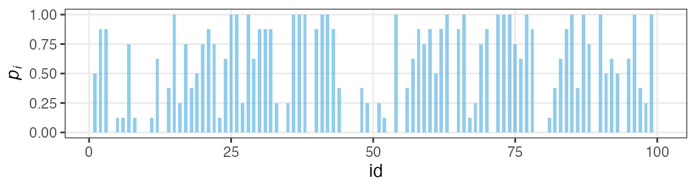
個体の生存能力をもっと少ないパラメータで表現できないか？
個体差をモデルに組み込みたい
各個体の生存率$p_i$が能力値$z_i$のシグモイド関数で決まると仮定。
その能力値は全個体共通の正規分布に従うと仮定:
$z_i \sim \mathcal{N}(\hat z, \sigma)$

パラメータ2つで済む: 平均 $\hat z$, ばらつき $\sigma$ 。
前者は標本平均 $\hat p$ から求まるとして、後者どうする？
個体能力のばらつき $\sigma$ が大きいと両端が増える
普通の二項分布は個体差無し $\sigma = 0$ を仮定してるのと同じ。
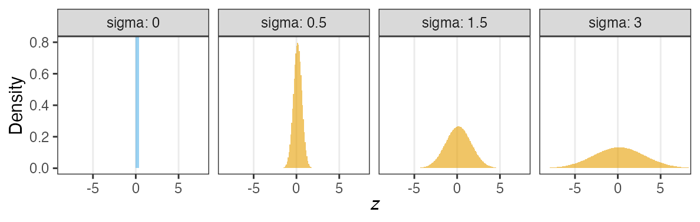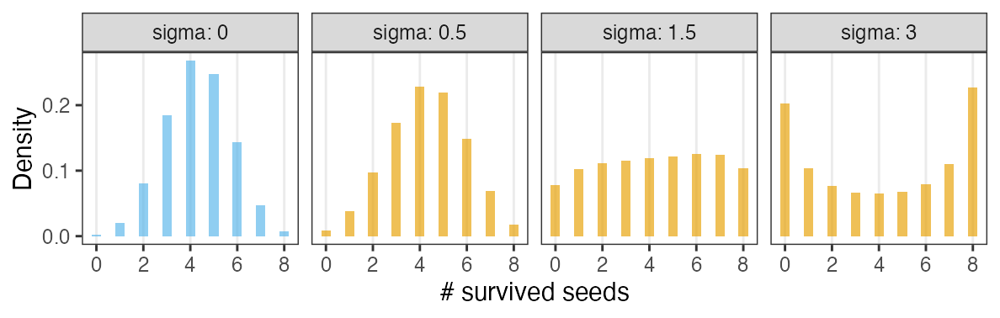
zの値で色分けしてみると想像しやすい
正規分布と二項分布の混ぜ合わせ……?


混合分布。ただの二項分布よりも良いあてはまり。
パラメータp(を決めるz)ごとに二項分布を作って、重み付けして足したもの。
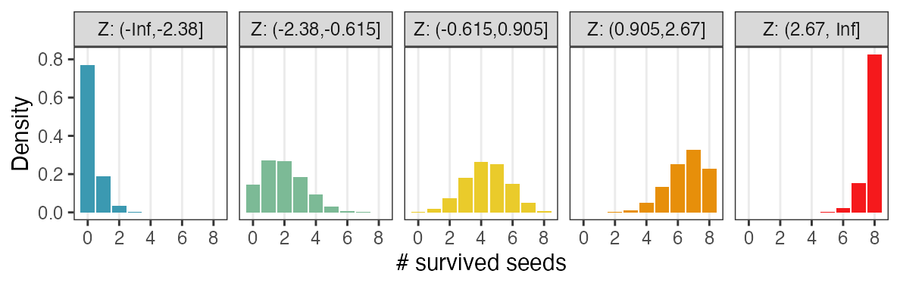

🔰 乱数生成で混合分布を実感してみよう
- Quarto Markdown を用意する
- 100個体の能力値zを正規乱数で生成。分布を描く。
- 各個体の種子生存率pをシグモイド関数で計算。分布を描く。
sigmoid = function(x, gain = 1) {1 / (1 + exp(-gain * x))} - そのpを使って実際の生存種子数を二項分布(n = 8)から生成。分布を描く。
- 能力の平均や分散の値を変えたらどうなるか見てみる。
ビールの注文数、再び
お客さんたちが注文したビールの杯数X。平均2.74杯。
はいはい、ポアソン分布でしょ……
いや、分散が大きいぞ。
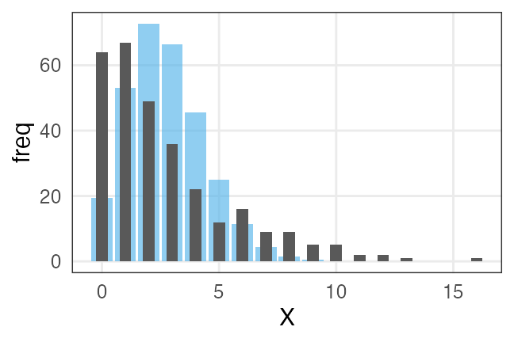
全員が同じ平均注文数$\lambda$を持つという仮定が間違ってたのかも。
🔰 平均注文数がガンマ分布に従うと仮定して、乱数生成してみよう。
負の二項分布 $~\text{NB}(n, p)$
成功率pの試行がn回成功するまでの失敗回数X。 n = 1 のとき幾何分布と一致。
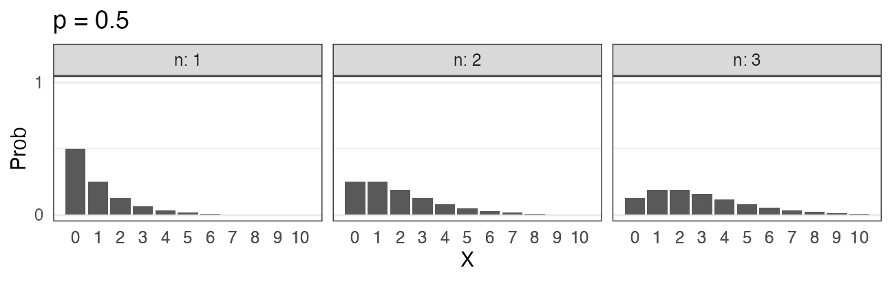
\[ \Pr(X = k \mid n,~p) = \binom {n + k - 1} k p^n (1 - p)^k \]
失敗回数ではなく試行回数を変数とする定義もある。
平均$\lambda$がガンマ分布でばらついたポアソン分布、とも解釈できる。
($k \to \infty$でポアソン分布と一致)
一般化線形混合モデル GLMM
固定効果(fixed effects) のみ扱っていたGLMを拡張して、
変量効果(random effect) を混合したモデル。
「混合分布を使うモデル」という意味ではないらしい。
\[\begin{split} y_i &\sim \text{Binomial}(n,~p_i) \\ \operatorname{logit}(p_i) &= \beta_0 + \beta_1 x_{1i} + \beta_2 x_{2i} + \ldots + z_{1i} + \ldots \\ z_{1i} &\sim \mathcal{N}(\mu_1,~\sigma_1) \end{split}\]
e.g.,
個体$i$の種子生存率$p_i$は、
(固定効果) 体サイズ$x_{1i}$と日当たり$x_{2i}$に依存し、
(変量効果) よくわからん個体差$z_{1i}$と植木鉢差$z_{2i}$もある。
固定効果にするか、変量効果にするか
推定したパラメータを予測に使うなら固定効果
- 予測に使えそうなので固定効果向き
- 観測・操作した連続値変数: 長さ、重さ、温度、etc.
- 観測・操作したカテゴリカル変数: 性別、投薬、etc.
- 予測に使えないので変量効果向き
- 観測・操作できなかった個体差:
たまたま集まってくれた学生15人 {A, B, C, …}。
Aさんの固定効果を推定できても、Zさんの予測には使えない。
- 観測・操作できなかった個体差:
- 観測・操作できなかったグループ差:
↑の学生をランダム5人ずつに分けたグループ {い、ろ、は}。
いグループの固定効果を推定できても、また集まることはない。
- 観測・操作できなかったグループ差:
どういうときに変量効果を考える必要があるか
データに擬似反復が含まれるとき。
ぜんぶ独立のつもりで解析すると推定が偏ったり誤ったり。
| 植木鉢 | 個体/植木鉢 | 種子/個体 | 疑似反復 | 推定不可 |
|---|---|---|---|---|
| 100個 | 1個体ずつ | 1個ずつ | – | 個体差・鉢差 |
| 25個 | 1個体ずつ | 4個ずつ | 個体 | 鉢差 |
| 20個 | 5個体ずつ | 1個ずつ | 植木鉢 | 個体差 |
| 5個 | 5個体ずつ | 4個ずつ | 植木鉢・個体 | – |
疑似反復あり
→ 観測できなかった個体差・場所差(変量効果)を推定可能
→ そのぶんを差し引いて固定効果を推定したい
GLMMの問題点・展望
- 最尤推定の計算が難しくなるので、あまり複雑にはできない
- ベイズ推定を使えばクリアできる
- GLMの拡張として理解はできても、実際に書くのは難しめ
- 階層ベイズモデルの一種として見るほうが便利
→ ここでGLMMの練習はせず、階層ベイズモデルに進む。

一般化線形(混合)モデルまとめ
- 何はともあれ作図して俯瞰
- GLMは統計モデリングの考え方の根幹
- 確率分布・リンク関数・説明変数
- 尤度・最尤法によるパラメータ推定
- 情報量基準などによるモデル選択
- GLMMは現実のデータ解析に向けた強化
- 疑似反復による変量効果を考慮
- 階層ベイズモデルとして扱うほうが楽
penguinsデータセット
https://allisonhorst.github.io/palmerpenguins/

install.packages("palmerpenguins")
library(palmerpenguins)
penguins_colors = c(Adelie = "darkorange", Chinstrap = "purple", Gentoo = "cyan4")
print(penguins)
penguinsデータセット
https://allisonhorst.github.io/palmerpenguins/
species island bill_length_mm bill_depth_mm flipper_length_mm body_mass_g sex year
1 Adelie Torgersen 39.1 18.7 181 3750 male 2007
2 Adelie Torgersen 39.5 17.4 186 3800 female 2007
3 Adelie Torgersen 40.3 18.0 195 3250 female 2007
4 Adelie Torgersen NA NA NA NA NA 2007
--
341 Chinstrap Dream 43.5 18.1 202 3400 female 2009
342 Chinstrap Dream 49.6 18.2 193 3775 male 2009
343 Chinstrap Dream 50.8 19.0 210 4100 male 2009
344 Chinstrap Dream 50.2 18.7 198 3775 female 2009
欠損値のある行を取り除いておく
性別はとりあえず使わないので、体長関連だけでも。
penguins |> dplyr::filter(dplyr::if_any(everything(), is.na))
species island bill_length_mm bill_depth_mm flipper_length_mm body_mass_g sex year
1 Adelie Torgersen NA NA NA NA NA 2007
2 Adelie Torgersen 34.1 18.1 193 3475 NA 2007
3 Adelie Torgersen 42.0 20.2 190 4250 NA 2007
4 Adelie Torgersen 37.8 17.1 186 3300 NA 2007
--
8 Gentoo Biscoe 46.2 14.4 214 4650 NA 2008
9 Gentoo Biscoe 47.3 13.8 216 4725 NA 2009
10 Gentoo Biscoe 44.5 15.7 217 4875 NA 2009
11 Gentoo Biscoe NA NA NA NA NA 2009
penguins_dropna = penguins |> tidyr::drop_na(body_mass_g)
dim(penguins_dropna)
[1] 342 8
🔰 penguinsでGLMの練習
次の課題を解いてみよう。
(次ページ以降に解答。まずは自力で。)
body_mass_gを横軸、flipper_length_mmを縦軸に、まず作図。- 単回帰して、切片と傾きを求める。そして作図。
speciesで色分けして作図。speciesも説明変数に加えて重回帰し、切片と傾きを求める。そして作図。- 余裕があれば、クチバシの長さと深さを縦横軸にして同様の解析。
単回帰の練習: 1. まず作図
どうやら、重いペンギンほど翼長も長い。
p_penweight = ggplot(penguins_dropna) +
aes(body_mass_g, flipper_length_mm) +
geom_point(shape = 16, alpha = 0.66) +
theme_bw(base_size = 20) +
theme(panel.grid.minor = element_blank())
p_penweight
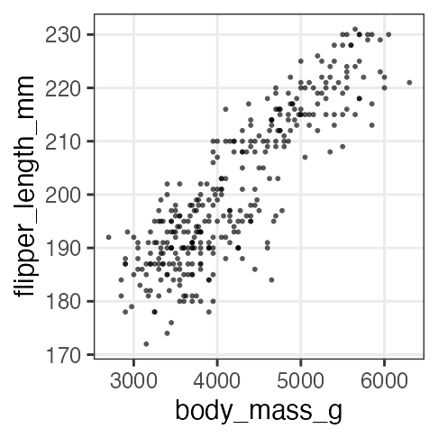
単回帰の練習: 2. モデル作成、フィッティング
とりあえずデフォルトの正規分布・恒等リンク。 $y = 136.7 + 0.0153 x$
fit1 = glm(flipper_length_mm ~ body_mass_g, data = penguins_dropna)
broom::tidy(fit1)
term estimate std.error statistic p.value
1 (Intercept) 136.72955927 1.996835406 68.47312 5.712947e-201
2 body_mass_g 0.01527592 0.000466836 32.72223 4.370681e-107
broom::glance(fit1)
null.deviance df.null logLik AIC BIC deviance df.residual nobs
1 67426.54 341 -1145.518 2297.035 2308.54 16250.3 340 342
単回帰の練習: 3. フィッティング結果を作図
結果とデータから予測値を作って回帰線を引く。
added1 = modelr::add_predictions(penguins_dropna, fit1, type = "response")
p1 = p_penweight +
geom_line(aes(y = pred), data = added1, linewidth = 1, color = "#3366ff")
p1
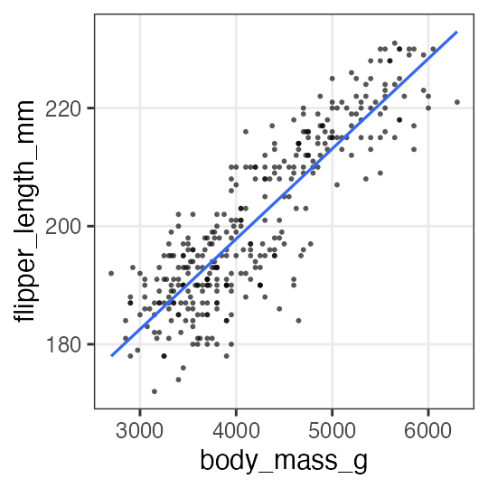
重回帰の練習: 1. まず作図
種によって色分けしてみると、傾向の違いが見える。
p_penweight_color = p_penweight + aes(color = species) +
scale_color_manual(values = penguins_colors)
p_penweight_color

重回帰の練習: 2. モデル作成、フィッティング
Adelieを基準に、ChinstrapとGentooはそれより長め。
体重の効果は単回帰のとき(0.0153)より小さい。
fit2 = glm(flipper_length_mm ~ body_mass_g + species, data = penguins_dropna)
broom::tidy(fit2)
term estimate std.error statistic p.value
1 (Intercept) 1.588603e+02 2.3865766963 66.564071 2.450113e-196
2 body_mass_g 8.402113e-03 0.0006338976 13.254686 1.401600e-32
3 speciesChinstrap 5.597440e+00 0.7882166229 7.101398 7.334777e-12
4 speciesGentoo 1.567747e+01 1.0906590679 14.374308 6.800823e-37
broom::glance(fit2)
null.deviance df.null logLik AIC BIC deviance df.residual nobs
1 67426.54 341 -1059.718 2129.437 2148.611 9839.073 338 342
重回帰の練習: 3. フィッティング結果を作図
added2 = modelr::add_predictions(penguins_dropna, fit2, type = "response")
p2 = p_penweight_color +
geom_line(aes(y = pred), data = added2, linewidth = 1)
p2

傾きも種によって違うかも。交互作用を入れてみたい。
交互作用の練習: モデル作成、フィッティング
Adelieを基準に、Chinstrapの傾きが結構違う。
切片の違いは解釈しにくくなった。
fit3 = glm(flipper_length_mm ~ body_mass_g * species, data = penguins_dropna)
broom::tidy(fit3)
term estimate std.error statistic p.value
1 (Intercept) 165.244812649 3.5508916651 46.536146 1.561669e-148
2 body_mass_g 0.006676867 0.0009522935 7.011354 1.301783e-11
3 speciesChinstrap -13.863939075 7.3012647809 -1.898841 5.844186e-02
4 speciesGentoo 6.059375933 6.0508813200 1.001404 3.173522e-01
5 body_mass_g:speciesChinstrap 0.005228197 0.0019486293 2.683013 7.657147e-03
6 body_mass_g:speciesGentoo 0.002362269 0.0013525781 1.746494 8.163897e-02
broom::glance(fit3)
null.deviance df.null logLik AIC BIC deviance df.residual nobs
1 67426.54 341 -1055.711 2125.422 2152.265 9611.166 336 342
交互作用の練習: フィッティング結果を作図
added3 = modelr::add_predictions(penguins_dropna, fit3, type = "response")
p3 = p_penweight_color +
geom_line(aes(y = pred), data = added3, linewidth = 1)
p3

ここまでの3つのモデルでどれがいいか？
AICで選ぶなら交互作用入り重回帰が良さそう。
labels = sprintf("AIC = %.1f", AIC(fit1, fit2, fit3)$AIC)
cowplot::plot_grid(p1 + labs(title = labels[1]),
p2 + labs(title = labels[2]) + theme(legend.position = "none"),
p3 + labs(title = labels[3]) + theme(legend.position = "none"), nrow = 1L)
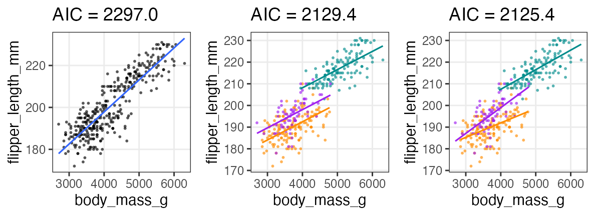
余裕があったら追加の練習
🔰クチバシの長さと深さで同じ解析をやってみよう。

🔰 重回帰
pred で回帰線を引くには add_predictions() の使い方に工夫が必要。
とりあえず geom_point() で"回帰点々"を表示してみるとこまでで可とする。
n = 200L
true_coef = c(3, 0.05, 0.006)
df_beer = tibble::tibble(
temperature = runif(n, 8, 32),
humidity = runif(n, 20, 80),
beer_sales = rpois(n, exp(true_coef[1] + true_coef[2] * temperature + true_coef[3] * humidity))
) |>
print()
temperature humidity beer_sales
1 17.57401 54.68339 67
2 10.13129 67.34727 55
3 25.28517 40.93855 104
4 31.73808 32.14308 113
--
197 26.28116 41.89173 105
198 23.53532 73.12257 113
199 13.87494 41.92560 51
200 31.60519 61.47984 140
🔰 ロジスティック回帰
次ページにヒント。
sigmoid = function(x, gain = 1) {1 / (1 + exp(-gain * x))}
nrep = 200L
n = 10L
df_logistic = tibble::tibble(
x = runif(nrep, -10, 35),
logit_p = -3 + 0.3 * x,
p = sigmoid(logit_p),
y = rbinom(nrep, n, p),
response = matrix(c(y, n - y), ncol = 2)
) |>
print()
x logit_p p y response[,1] [,2]
1 7.951271 -0.6146188 0.35100632 4 4 6
2 -6.003840 -4.8011520 0.00815325 0 0 10
3 22.409698 3.7229095 0.97640654 10 10 0
4 34.508895 7.3526686 0.99935953 10 10 0
--
197 24.277180 4.2831541 0.98638875 10 10 0
198 19.128721 2.7386162 0.93926720 8 8 2
199 1.015520 -2.6953441 0.06324865 0 0 10
200 34.259733 7.2779199 0.99930986 10 10 0
ロジスティック回帰のヒント
左辺の応答変数に指定できるのはだいたい次の2種類:
- 成功を1、失敗を0で表す整数vector (狭義のロジスティック回帰)
- 1列目が成功回数、2列目が失敗回数の整数matrix
今回の場合、成功回数 y だけをformulaに入れると怒られる
glm(y ~ x, df_logistic, family = binomial)
Error in eval(family$initialize): y values must be 0 <= y <= 1
ので失敗回数もモデルに含むよう response ~ x とする。
(今回のように試行回数が10回固定じゃなくても使える、ということ)
🔰 共分散分析: GLM with 質的変数 + 量的変数
まずはweatherだけで分散分析、次にtemperatureを入れて共分散分析。
n = 200L
b = c(70, 3, 20, -20) # true coef
weather_levels = c("sunny", "cloudy", "rainy")
df_ancova = tibble::tibble(
temperature = runif(n, 8, 32),
weather = factor(sample(weather_levels, n, TRUE), levels = weather_levels)
) |>
dplyr::mutate(name = weather, value = 1L) |>
tidyr::pivot_wider(values_fill = 0L) |>
dplyr::select(!cloudy) |>
dplyr::mutate(mu = b[1] + b[2] * temperature + b[3] * sunny + b[4] * rainy) |>
dplyr::mutate(beer_sales = rnorm(n, mu, 10)
) |>
print()
temperature weather sunny rainy mu beer_sales
1 23.377217 cloudy 0 0 140.13165 129.36288
2 26.043088 cloudy 0 0 148.12926 138.26966
3 30.830351 cloudy 0 0 162.49105 141.46190
4 15.022311 cloudy 0 0 115.06693 108.18593
--
197 8.277514 cloudy 0 0 94.83254 74.38321
198 28.675228 rainy 0 1 136.02568 140.34777
199 27.310881 rainy 0 1 131.93264 122.31587
200 24.064285 sunny 1 0 162.19286 144.89368
🔰 交互作用
n = 200L
b = c(70, 3, 100, -2) # true coef
weather_levels = c("sunny", "rainy")
df_interact = tibble::tibble(
temperature = runif(n, 8, 32),
weather = factor(sample(weather_levels, n, TRUE), levels = weather_levels)
) |>
dplyr::mutate(name = weather, value = 1L) |>
tidyr::pivot_wider(values_fill = 0L) |>
dplyr::mutate(mu = b[1] * sunny + b[2] * temperature + b[3] * rainy + b[4] * temperature * rainy) |>
dplyr::mutate(beer_sales = rnorm(n, mu, 10)) |>
print()
temperature weather rainy sunny mu beer_sales
1 23.377217 rainy 1 0 123.37722 116.2995
2 26.043088 rainy 1 0 126.04309 133.9018
3 30.830351 rainy 1 0 130.83035 130.6798
4 15.022311 rainy 1 0 115.02231 117.5620
--
197 8.277514 sunny 0 1 94.83254 104.2573
198 28.675228 sunny 0 1 156.02568 155.3134
199 27.310881 rainy 1 0 127.31088 131.0297
200 24.064285 sunny 0 1 142.19286 142.8241
参考文献
- データ解析のための統計モデリング入門 久保拓弥 2012
- StanとRでベイズ統計モデリング 松浦健太郎 2016
- RとStanではじめる ベイズ統計モデリングによるデータ分析入門 馬場真哉 2019
- データ分析のための数理モデル入門 江崎貴裕 2020
- 分析者のためのデータ解釈学入門 江崎貴裕 2020
- 統計学を哲学する 大塚淳 2020
- 「進化学実習2024」 東北大学 理学部生物学科 (2024-04)
- 「Rを用いたデータ解析の基礎と応用」 石川由希 2023 名古屋大学
- 「統計モデリング概論 DSHC 2023」 東京海上 DSHC (2023-08)